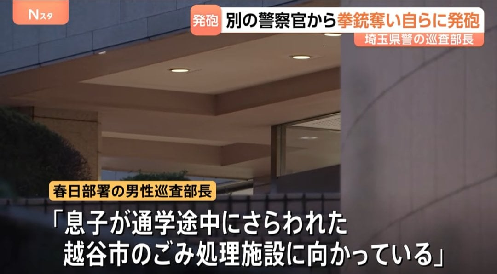
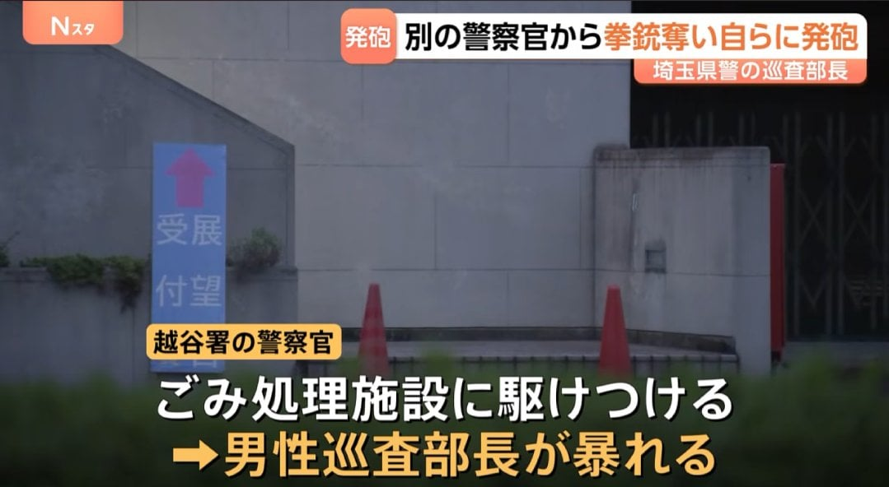
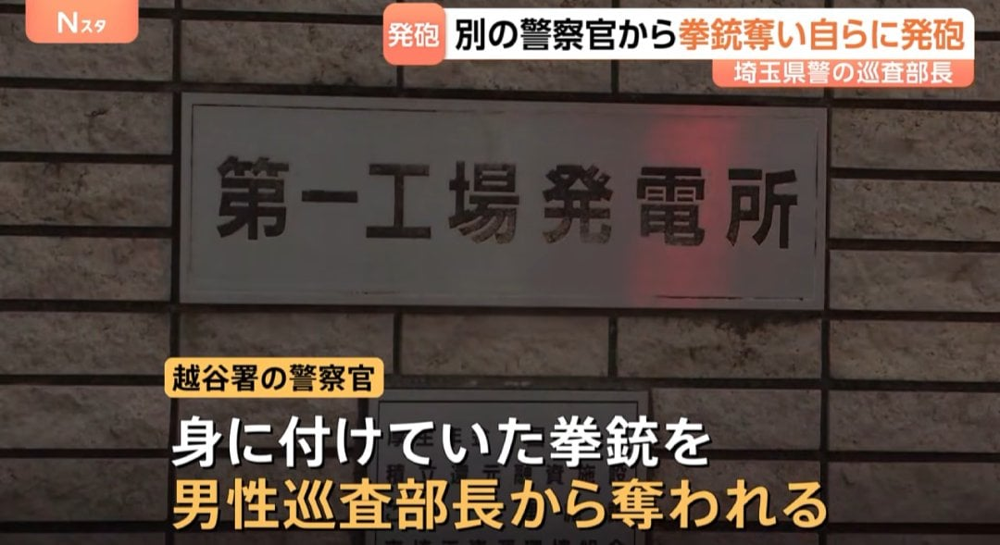

2026년 11월 3일, 사이타마현에서 벌어진 사건이다.
한국 경찰 계급으로 치면 경위에 해당하는 일본의 순사부장이
"내 아들이 학교에 가던 도중 납치됐다."
"지금 아이를 찾으려고 사이타마현 고시가야시 쓰레기 처리장으로 가고 있다."
라고 경찰서에 신고를 했다.

신고를 받고 4명의 순경이 현장에 급파.
순사 부장은 현장에서 마구 날뛰고 있었다고 한다.
하지만 순사 부장이 말했던 납치됐다는 아이는 현장에 없었다.
순사 부장이 경찰서에 한 신고 자체가 거짓말이었던 것.

순경 측에서 그걸 지적하자 순사 부장을 갑자기 순경들에게 달려들었다.
그리고 몸싸움 끝에 한 순경한테서 권총을 빼앗았다.
권총을 손에 넣은 순사 부장은 즉시 자기 머리에 권총을 발포했다.

뭐지